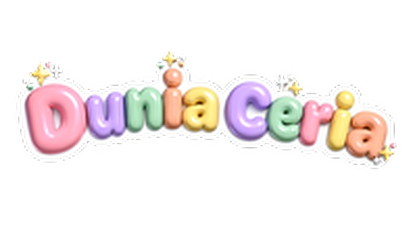

Belajar Seronok!
Pilih tahap kamu
1/10
1/10
Foto: Wikimedia Commons
🃏 Padan Kad
0
Cari pasangan huruf dan gambar!
1/10
1/10
1/3

Pilih tahap kamu
Foto: Wikimedia Commons
Cari pasangan huruf dan gambar!